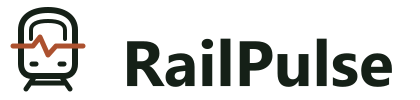
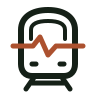
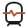
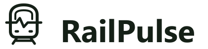

Railway intelligence, in one signal.
A modern train front frames a demand pulse. Converging rails anchor the symbol in railway operations. The palette follows the current RailPulse website.




Warm ivory with a brighter terracotta pulse for dark backgrounds.

16 / 24 / 32 / 48 px. The compact mark removes windshield and headlight detail.

For single-color printing, stamps and restrained applications.
#152017#AC512F#FAF8F5